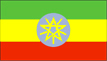
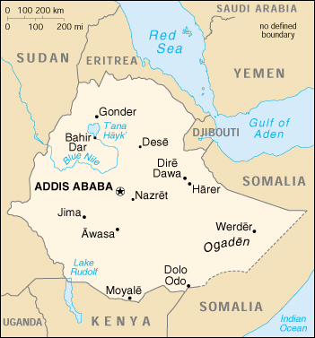

{kind=link}


| Ethiopia |  |
|
|  | |
| Introduction |
Background: Unique among African countries, the ancient Ethiopian monarchy maintained its freedom from colonial rule, one exception being the Italian occupation of 1936-41. In 1974 a military junta, the Derg, deposed Emperor Haile SALASSIE (who had ruled since 1930) and established a socialist state. Torn by bloody coups, uprisings, wide-scale drought, and massive refugee problems, the regime was finally toppled by a coalition of rebel forces, the Ethiopian People's Revolutionary Democratic Front (EPRDF), in 1991. A constitution was adopted in 1994 and Ethiopia's first multiparty elections were held in 1995. A border war with Eritrea that erupted in May 1998 has strengthened the ruling coalition, but has hurt the nation's economy.
| Geography |
Location: Eastern Africa, west of Somalia
Geographic coordinates: 8 00 N, 38 00 E
Map references: Africa
Area:
total:
1,127,127 sq km
land:
1,119,683 sq km
water:
7,444 sq km
Area - comparative: slightly less than twice the size of Texas
Land boundaries:
total:
5,311 km
border countries:
Djibouti 337 km, Eritrea 912 km, Kenya 830 km, Somalia 1,626 km, Sudan 1,606 km
Coastline: 0 km (landlocked)
Maritime claims: none (landlocked)
Climate: tropical monsoon with wide topographic-induced variation
Terrain: high plateau with central mountain range divided by Great Rift Valley
Elevation extremes:
lowest point:
Denakil -125 m
highest point:
Ras Dashen Terara 4,620 m
Natural resources: small reserves of gold, platinum, copper, potash, natural gas, hydropower
Land use:
arable land:
12%
permanent crops:
1%
permanent pastures:
40%
forests and woodland:
25%
other:
22% (1993 est.)
Irrigated land: 1,900 sq km (1993 est.)
Natural hazards: geologically active Great Rift Valley susceptible to earthquakes, volcanic eruptions; frequent droughts
Environment - current issues: deforestation; overgrazing; soil erosion; desertification
Environment - international agreements:
party to:
Biodiversity, Climate Change, Desertification, Endangered Species, Ozone Layer Protection
signed, but not ratified:
Environmental Modification, Law of the Sea, Nuclear Test Ban
Geography - note: landlocked - entire coastline along the Red Sea was lost with the de jure independence of Eritrea on 24 May 1993
| People |
Population:
64,117,452
note:
estimates for this country explicitly take into account the effects of excess mortality due to AIDS; this can result in lower life expectancy, higher infant mortality and death rates, lower population and growth rates, and changes in the distribution of population by age and sex than would otherwise be expected (July 2000 est.)
Age structure:
0-14 years:
47% (male 15,167,395; female 14,977,346)
15-64 years:
50% (male 16,195,637; female 15,987,089)
65 years and over:
3% (male 816,011; female 973,974) (2000 est.)
Population growth rate: 2.76% (2000 est.)
Birth rate: 45.13 births/1,000 population (2000 est.)
Death rate: 17.63 deaths/1,000 population (2000 est.)
Net migration rate:
0.14 migrant(s)/1,000 population (2000 est.)
note:
repatriation of Ethiopians who fled to Sudan for refuge from war and famine in earlier years is expected to continue for several years; small numbers of Sudanese and Somali refugees, who fled to Ethiopia from the fighting or famine in their own countries, continue to return to their homes
Sex ratio:
at birth:
1.03 male(s)/female
under 15 years:
1.01 male(s)/female
15-64 years:
1.01 male(s)/female
65 years and over:
0.84 male(s)/female
total population:
1.01 male(s)/female (2000 est.)
Infant mortality rate: 101.29 deaths/1,000 live births (2000 est.)
Life expectancy at birth:
total population:
45.17 years
male:
44.41 years
female:
45.94 years (2000 est.)
Total fertility rate: 7.07 children born/woman (2000 est.)
Nationality:
noun:
Ethiopian(s)
adjective:
Ethiopian
Ethnic groups: Oromo 40%, Amhara and Tigre 32%, Sidamo 9%, Shankella 6%, Somali 6%, Afar 4%, Gurage 2%, other 1%
Religions: Muslim 45%-50%, Ethiopian Orthodox 35%-40%, animist 12%, other 3%-8%
Languages: Amharic, Tigrinya, Orominga, Guaraginga, Somali, Arabic, other local languages, English (major foreign language taught in schools)
Literacy:
definition:
age 15 and over can read and write
total population:
35.5%
male:
45.5%
female:
25.3% (1995 est.)
| Government |
Country name:
conventional long form:
Federal Democratic Republic of Ethiopia
conventional short form:
Ethiopia
local long form:
Ityop'iya Federalawi Demokrasiyawi Ripeblik
local short form:
Ityop'iya
abbreviation:
FDRE
Data code: ET
Government type: federal republic
Capital: Addis Ababa
Administrative divisions: 9 ethnically-based administrative regions (astedader akababiwach, singular - astedader akabibi) and 2 chartered cities*: Addis Ababa*; Afar; Amhara, Benishangul/Gumaz; Dire Dawa*; Gambela; Harar; Oromia; Somali; Southern Nations, Nationalities, and Peoples Region; Tigray
Independence: oldest independent country in Africa and one of the oldest in the world - at least 2,000 years
National holiday: National Day, 28 May (1991) (defeat of MENGISTU regime)
Constitution: ratified December 1994; effective 22 August 1995
Legal system: currently transitional mix of national and regional courts
Suffrage: 18 years of age; universal
Executive branch:
chief of state:
President NEGASSO Gidada (since 22 August 1995)
head of government:
Prime Minister MELES Zenawi (since NA August 1995)
cabinet:
Council of Ministers as provided for in the December 1994 constitution; ministers are selected by the prime minister and approved by the House of People's Representatives
elections:
president elected by the House of People's Representatives for a six-year term; election last held NA June 1995 (next to be held NA May 2001); prime minister designated by the party in power following legislative elections
election results:
NEGASSO Gidada elected president; percent of vote by the House of People's Representatives - NA
Legislative branch:
bicameral Parliament consists of the House of Federation or upper chamber (117 seats; members are chosen by state assemblies to serve five-year terms) and the House of People's Representatives or lower chamber (548 seats; members are directly elected by popular vote from single-member districts to serve five-year terms)
elections:
regional and national popular elections were held in May and June 1995 (next to be held NA May 2000)
election results:
percent of vote - NA; seats - EPRDF 483, regional political groupings 46, independents 8; note - 11 seats unconfirmed
note:
many opposition groups, including the Oromo Liberation Front, boycotted the election
Judicial branch: Federal Supreme Court; the president and vice president of the Federal Supreme Court are recommended by the prime minister and appointed by the House of People's Representatives; for other federal judges, the prime minister submits candidates selected by the Federal Judicial Administrative Council to the House of People's Representatives for appointment
Political parties and leaders: All-Amhara People's Organization or AAPO [Dr. ASRAT Woldeyes]; Coalition of Alternative Forces for Peace and Democracy or CAFPD [leader NA]; Ethiopian Democratic Union or EDU [leader NA]; Ethiopian Movement for Democracy, Peace, and Unity or EMDPU [GOSHU Walde]; Ethiopian National Democratic Party or ENDP [NEBIYU Samuel, FEKADU Gedamu]; Ethiopian People's Revolutionary Democratic Front or EPRDF [MELES Zenawi]; Oromo Liberation Front or OLF [GELASA Dilbo]; dozens of small parties
Political pressure groups and leaders: Southern Ethiopia People's Democratic Coalition; numerous small, ethnically based groups have formed since the defeat of the former MENGISTU regime in 1991, including several Islamic militant groups
International organization participation: ACP, AfDB, CCC, ECA, FAO, G-24, G-77, IAEA, IBRD, ICAO, ICRM, IDA, IFAD, IFC, IFRCS, IGAD, ILO, IMF, IMO, Intelsat, Interpol, IOC, IOM (observer), ISO, ITU, NAM, OAU, OPCW, UN, UNCTAD, UNESCO, UNHCR, UNIDO, UNU, UPU, WFTU, WHO, WIPO, WMO, WToO
Diplomatic representation in the US:
chief of mission:
Ambassador BERHANE Gebre-Christos
chancery:
2134 Kalorama Road NW, Washington, DC 20008
telephone:
[1] (202) 234-2281
FAX:
[1] (202) 328-7950
Diplomatic representation from the US:
chief of mission:
Ambassador Tibor P. NAGY
embassy:
Entoto Street, Addis Ababa
mailing address:
P. O. Box 1014, Addis Ababa
telephone:
[251] (1) 550666
FAX:
[251] (1) 551328
Flag description: three equal horizontal bands of green (top), yellow, and red with a yellow pentagram and single yellow rays emanating from the angles between the points on a light blue disk centered on the three bands; Ethiopia is the oldest independent country in Africa, and the colors of her flag were so often adopted by other African countries upon independence that they became known as the pan-African colors
| Economy |
Economy - overview: Ethiopia's economy is based on agriculture, which accounts for half of GDP, 90% of exports, and 80% of total employment. The agricultural sector suffers from frequent periods of drought and poor cultivation practices, and as many as 4.6 million people need food assistance annually. Coffee is critical to the Ethiopian economy, and Ethiopia earned $267 million in 1999 by exporting 105,000 metric tons. According to current estimates, coffee contributes 10% of Ethiopia's GDP. More than 15 million people (25% of the population) derive their livelihood from the coffee sector. Other exports include live animals, hides, gold, and qat. In December 1999, Ethiopia signed a $1.4 billion joint venture deal to develop a huge natural gas field in the Somali Regional State. The war with Eritrea has forced the government to spend scarce resources on the military and forced the government to scale back ambitious development plans. Foreign investment has declined significantly. Government taxes imposed in late 1999 to raise money for the war will depress an already weak economy. The war has forced the government to improve roads and other parts of the previously neglected infrastructure, but only certain regions of the nation have benefited.
GDP: purchasing power parity - $33.3 billion (1999 est.)
GDP - real growth rate: 0% (1999 est.)
GDP - per capita: purchasing power parity - $560 (1999 est.)
GDP - composition by sector:
agriculture:
46%
industry:
12%
services:
42% (1998 est.)
Population below poverty line: NA%
Household income or consumption by percentage share:
lowest 10%:
NA%
highest 10%:
NA%
Inflation rate (consumer prices): 4% (1999 est.)
Labor force: NA
Labor force - by occupation: agriculture and animal husbandry 80%, government and services 12%, industry and construction 8% (1985)
Unemployment rate: NA%
Budget:
revenues:
$1 billion
expenditures:
$1.48 billion, including capital expenditures of $415 million (FY96/97)
Industries: food processing, beverages, textiles, chemicals, metals processing, cement
Industrial production growth rate: NA%
Electricity - production: 1.36 billion kWh (1998)
Electricity - production by source:
fossil fuel:
7.35%
hydro:
89.34%
nuclear:
0%
other:
3.31% (1998)
Electricity - consumption: 1.265 billion kWh (1998)
Electricity - exports: 0 kWh (1998)
Electricity - imports: 0 kWh (1998)
Agriculture - products: cereals, pulses, coffee, oilseed, sugarcane, potatoes; hides, cattle, sheep, goats
Exports: $420 million (f.o.b., 1998)
Exports - commodities: coffee, gold, leather products, oilseeds
Exports - partners: Germany 22%, Japan 12%, Italy 9%, UK 5% (1997 est.)
Imports: $1.25 billion (f.o.b., 1998 est.)
Imports - commodities: food and live animals, petroleum and petroleum products, chemicals, machinery, motor vehicles
Imports - partners: Italy 10%, US 9%, Japan 8%, Jordan 5% (1997 est.)
Debt - external: $10 billion (1997)
Economic aid - recipient: $367 million (FY95/96)
Currency: 1 birr (Br) = 100 cents
Exchange rates:
birr (Br) per US$1 (end of period) - 8.2 (January 2000), 7.5030 (1998), 6.8640 (1997), 6.4260 (1996), 6.3200 (1995)
note:
since May 1993, the birr market rate has been determined in an interbank market supported by weekly wholesale auction; prior to that date, the official rate was pegged to US$1 = 5.000 birr
Fiscal year: 8 July - 7 July
| Communications |
Telephones - main lines in use: 365,000 (1999)
Telephones - mobile cellular: 4,000 (1999)
Telephone system:
open wire and microwave radio relay system adequate for government use
domestic:
open wire; microwave radio relay; radio communication in the HF, VHF, and UHF frequencies; two domestic satellites provide the national trunk service
international:
open wire to Sudan and Djibouti; microwave radio relay to Kenya and Djibouti; satellite earth stations - 3 Intelsat (1 Atlantic Ocean and 2 Pacific Ocean)
Radio broadcast stations: AM 5, FM 0, shortwave 2 (1999)
Radios: 11.75 million (1997)
Television broadcast stations: 25 (1999)
Televisions: 320,000 (1997)
Internet Service Providers (ISPs): 1 (1999)
| Transportation |
Railways:
total:
681 km (Ethiopian segment of the Addis Ababa-Djibouti railroad)
narrow gauge:
681 km 1.000-m gauge
note:
in April 1998, Djibouti and Ethiopia announced plans to revitalize the century-old railroad that links their capitals; since May 1998 Ethiopia has expended considerable effort to repair and maintain the lines
Highways:
total:
28,500 km
paved:
4,275 km
unpaved:
24,225 km (1996 est.)
Ports and harbors: none; Ethiopia is landlocked and was by agreement with Eritrea using the ports of Assab and Massawa; since the border dispute with Eritrea flared, Ethiopia has used the port of Djibouti for nearly all of its imports
Merchant marine:
total:
12 ships (1,000 GRT or over) totaling 84,915 GRT/112,634 DWT
ships by type:
cargo 7, container 1, petroleum tanker 1, roll-on/roll-off 3 (1999 est.)
Airports: 85 (1999 est.)
Airports - with paved runways:
total:
11
over 3,047 m:
3
2,438 to 3,047 m:
6
1,524 to 2,437 m:
2 (1999 est.)
Airports - with unpaved runways:
total:
74
over 3,047 m:
2
2,438 to 3,047 m:
7
1,524 to 2,437 m:
11
914 to 1,523 m:
35
under 914 m:
19 (1999 est.)
| Military |
Military branches:
Ground Forces, Air Force, Police, Militia
note:
Ethiopia is landlocked and has no navy; following the independence of Eritrea, Ethiopian naval facilities remained in Eritrean possession and ships which belonged to the former Ethiopian Navy and based at Djibouti have been sold
Military manpower - military age: 18 years of age
Military manpower - availability:
males age 15-49:
14,184,072 (2000 est.)
Military manpower - fit for military service:
males age 15-49:
7,392,677 (2000 est.)
Military manpower - reaching military age annually:
males:
686,801 (2000 est.)
Military expenditures - dollar figure: $138 million (FY98/99)
Military expenditures - percent of GDP: 2.5% (FY98/99)
| Transnational Issues |
Disputes - international: most of the southern half of the boundary with Somalia is a Provisional Administrative Line; territorial dispute with Somalia over the Ogaden; dispute over alignment of boundary with Eritrea led to armed conflict in 1998, which is still unresolved despite arbitration efforts
Illicit drugs: transit hub for heroin originating in Southwest and Southeast Asia and destined for Europe and North America as well as cocaine destined for markets in southern Africa; cultivates qat (chat) for local use and regional export, principally to Djibouti and Somalia